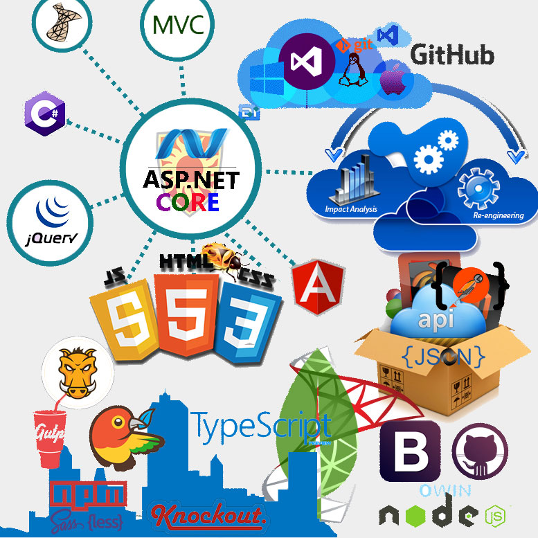

دوره آموزشی ASP.NET CORE
بنام خدا
تکنولوژی ASP.NET Core، که در ابتدا با نام ASP.NET 5 ارائه شده بود، بازنویسی کامل ASP.NET است که با ایدهی کاملا ماژولار ، بهینه و انتشار یافته است.
این تکنولوژی جدید، بر خلاف سابق، بر اساس DLL نبوده و از طریق آن، قابلیت به روز رسانی منظم و توزیع آسان از طریق ناگت، میسر خواهد شد.
به علاوه ، بسیاری از الگوهای برنامه نویسی شیءگرا مانند تزریق وابستگیها، به صورت توکار و قدرتمند از ابتدا پشتیبانی میشوند.
قبل از این فریم ورک , فضای نام System.Web.MVC مخصوص ASP.NET MVC و فضای نام مجزای دیگری به نام System.Web.Http مخصوص ASP.NET Web API بود.
اما اکنون تنها یک فضای نام مشترک و یکپارچه به نام Microsoft.AspNet.Mvc هر دوی این تکنولوژی ها را تحت پوشش قرار میدهد.
ارتباط با سرور تنها از طریق IIS نبوده و با استفاده از هاست جدید چندسکویی به نام Kesterl، حتی به سرعتی 5 برابر سرعت NodeJS می توان دست یافت.

سرفصل های دوره
بررسی ASP.NET CORE و GitHub (رایگان)
این آموزش به عنوان مقدمه ای برای شروع کار با GitHub و نحوه تعامل آن با داکیومنت متن باز ASP.NET CORE در گروه آموزشی طلوع ایجاد گردیده و بصورت رایگان ارائه میگردد.
مشاهده این فایل آموزشی به تمامی دولوپر ها توصیه میشود.
برای دانلود کلیک کنید.
فصل اول: مقدمه و شروع به کار با ASP.NET CORE
- قسمت اول: نگرشی بر تاریخچه وب و راهبرد عملیاتی شرکت مایکروسافت
- قسمت دوم: مهاجرت به ASP.NET CORE !
- قسمت سوم: نصب و اجرای ASP.NET CORE در محیط پاور شل و کامنت پرامت
- قسمت چهارم: ایجاد پروژه جدید ASP.NET CORE و شروع کار با VISUAL STUDIO CODE
- قسمت پنجم: نصب و راه اندازی NODE JS و نحوه ایجاد پروژه ASP.NET CORE در پلت فرم های دیگر با استفاده از NPM و BOWER
- قسمت ششم: ادامه کار با npm
فصل دوم: کار با WebApi در ASP.NET CORE
- قسمت اول : Integtation WebApi ,WebPage & MVC in ASP.Net Core
- قسمت دوم : معرفی Postman و GitHub و ایجاد و مدیریت WebApi
- قسمت سوم :ایجاد پروژه WebApi و پیاده سازی Repository در پروژه
- قسمت چهارم: کار با اجزای کلاس Startup ثبت سرویس ها در کانتینر Dependency Injection
- قسمت پنجم : افزودن کنترلر به پروژه و تزریق ریپازیتوری به کنترلر
- قسمت ششم : اجرای پروژه و تست پروژه با Postman
- قسمت هفتم : راهکارهای جدید پابلیش پروژه و آشنایی با پابلیش و فعالیت در GitHub
فصل سوم: MVC WebApplication
- قسمت اول: شروع کار با ایجاد پروژه، مسیر دهی در متد Configure و اجرای پروژه با IIS و Kestrel
- قسمت دوم: افزودن کنترلر و ویو به برنامه، پاس دادن اطلاعات از کنترلر به ویو و معرفی ViewImports_
- قسمت سوم: ایجاد پروژه با Individual User Accounts و معرفی Identity Entityframework Core CodeFirst
- قسمت چهارم: کار با بانک اطلاعات Local DB و مدیریت بانک اطلاعات از طریق SQLServer Object Explorer
- قسمت پنجم: معرفی TagHelper ها در ASP.NET CORE
- قسمت ششم: Migration در ASP.NET CORE
- فصل رایگان: بررسی ASP.NET CORE و GitHub
فصل چهارم: اصول و مبانی ASP.NET CORE
بخش اول: Middleware
- قسمت اول : حذف HttpHandler , HttpModule و جایگذاری Middleware
- قسمت دوم: نحوه فعالیت Middleware ها در متد Configure کلاس Startup
- قسمت سوم: کار با اکستنشن متد های Run، Use، Map و Commit on GitHub
- قسمت چهارم: مروری بر Middleware های موجود در پروژه های ASP.NET CORE
بخش دوم: StaticFiles
- قسمت اول: افزودن StaticFiles به پروژه و بررسی فولدر wwwroot
- قسمت دوم: استفاده از Option های StaticFiles و ایجاد فولدر اختصاصی
- قسمت سوم: استفاده از FileServer و برسی DefaultFiles
- قسمت چهارم: پابلیش تغییرات در GitHub و بررسی PullRequest
بخش سوم: Routing
بخش چهارم: مدیریت خطا یا Error Handling
بخش پنجم: بومی سازی (Globalization & Localization)
بخش ششم: FileProvider
بخش هفتم: Session
فصل پنجم: Entity Framework Core (پروژه محور)
- قسمت اول: شروع به کار و مقایسه EntityFramework 6x و EntityFramework Core
- قسمت دوم :ارتقا به نسخه NET Core 1.1. , VisualStudio 2017 ( کار با مدل)
- قسمت سوم:ایجاد کنترلر و ویو
- قسمت چهارم: بررسی تغییرات ایجاد شده در کنترلر ها و افزودن مدیریت خطا در اکشن ها
- قسمت پنجم : امکان مرتب نمودن داده ها در ایندکس و افزودن باکس جستجو
- قسمت ششم : صفحه بندی و شخصی سازی ویو
- قسمت هفتم : Migration و امکان مشاهده و سابقه مهاجرت
- قسمت هشتم : کامپلکس دیتا مدل و پیاده سازی اتربیوت و آپدیت دیتا بیس
- قسمت نهم : افزودن کلاس های پروژه و برقراری ارتباط بین کلاس ها
- قسمت دهم : بررسی بازسازی پروژه و مایگریشن و ارتباطات چند به چند
- قسمت یازدهم : خواندن دیتا از بانک اطلاعات به روش Eager Loading
- قسمت دوازدهم : خواندن دیتا از بانک اطلاعات به روش Explicit Loading
- قسمت سیزدهم :ادامه بحث Explicit Loading
- قسمت چهاردهم :شخصی سازی در آپدیت _قسمت اول
- قسمت پانزدهم :شخصی سازی در آپدیت _قسمت دوم
- قسمت شانزدهم :شخصی سازی در آپدیت _قسمت سوم
- قسمت هفدهم :شخصی سازی در آپدیت _قسمت چهارم
- قسمت هجدهم :تداخل همزمانی در هنگام آپدیت
- قسمت نوزدهم :تداخل همزمانی در هنگام حذف
- قسمت بیستم :ارث بری
- قسمت بیست و یکم (آخر) :مطالب تکمیلی و سورس کد پروژه
فصل ششم: کلاینت ساید_Client Side
- قسمت اول: مقدمه فصل و شروع کار با Gulp در محیط Command line
- قسمت دوم : شروع کار با Grunt در محیط Command Line
- قسمت سوم: شروع کار با Bower در محیط Command Line
- قسمت چهارم: کار با Gulp در محیط Visual Studio
- قسمت پنجم : کار با Task Runner در محیط Visual Studio
- قسمت ششم: کار با Grunt در محیط Visual Studio
- قسمت هفتم: کار با Bower در محیط Visual Studio
- قسمت هشتم: کار با Bootstrap
- قسمت نهم: کار با Knockout js
- قسمت دهم: کار با Angular js _1
- قسمت یازدهم: کار با Angular js _2
- قسمت دوازدهم: کار با Angular js _3
- قسمت سیزدهم: کار با Angular js _4
- قسمت چهاردهم: کار با LESS
- قسمت پانزدهم: کار با SASS
- قسمت شانزدهم: کار با Font Awesome
- قسمت هفدهم: کار با Bunding & Minifiction
- قسمت هجدهم: کار با Yeoman
- قسمت آخر دوره: Publish
نظرات شما
قسمت نظرات با استفاده از سرویس دیسکاس پیاده سازی شده است. متأسفانه این سرویس از داخل ایران قابل دسترس نیست. لطفا از آی پی خارجی استفاده کنید.